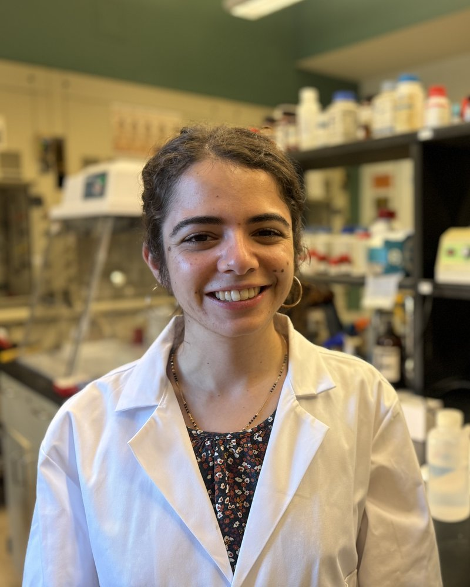

Ana Gonzalez-Nayeck
Assistant Professor of Environmental Science, Baruch College (CUNY)

Assistant Professor of Environmental Science, Baruch College (CUNY)
Check back soon! We’re gathering bios and photos from our current and past lab members.